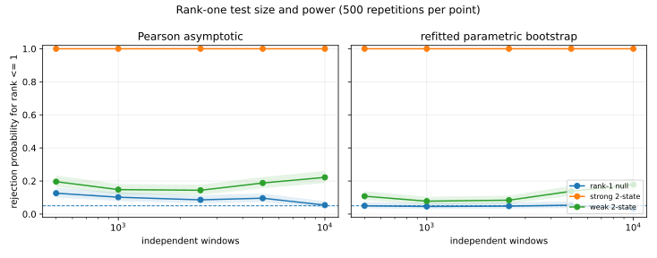
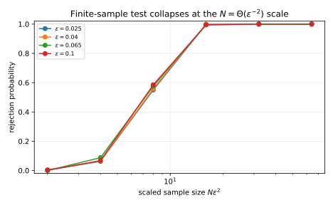
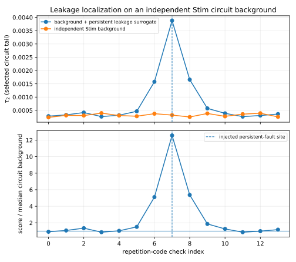
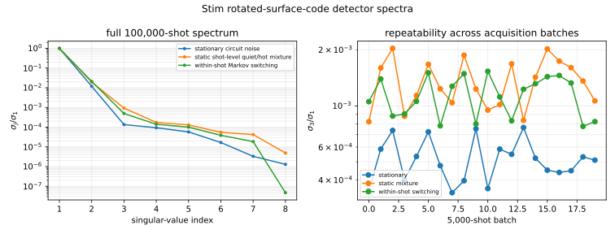
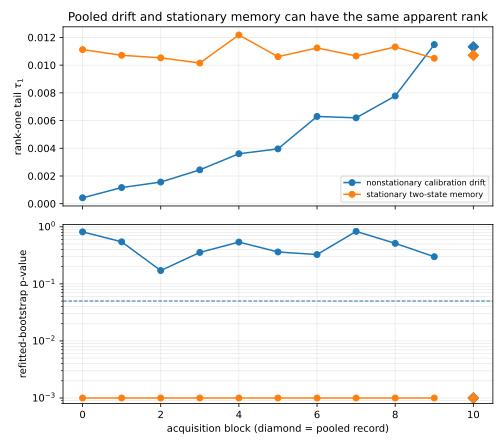
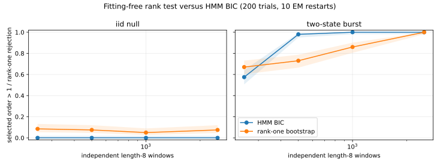
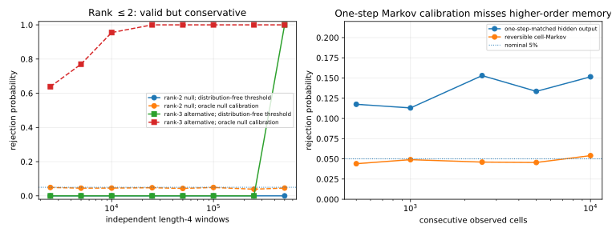
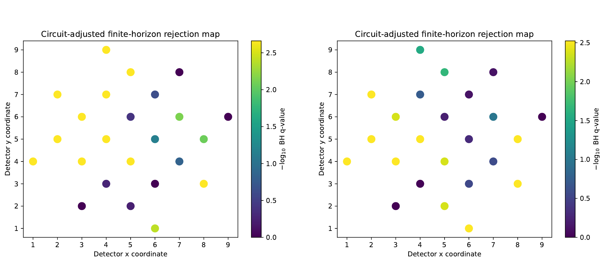
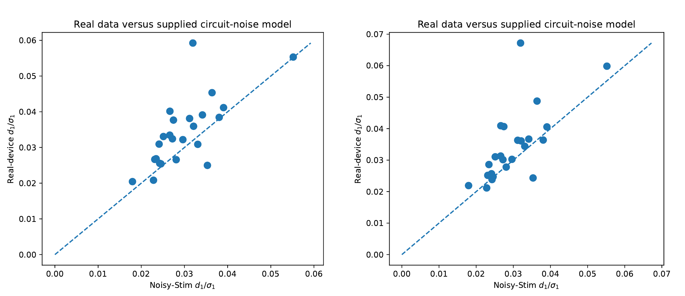
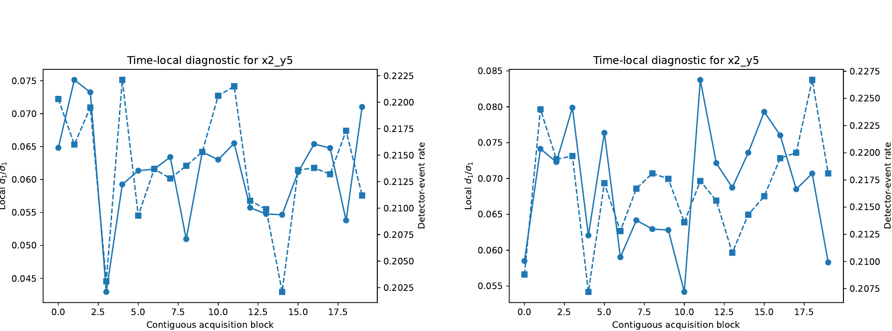

Abstract
Repeated quantum-error-correction (QEC) circuits produce syndrome streams with memory from both the known circuit and the unknown noise process. We ask what a finite observed record can certify without assigning physical meaning to an arbitrary internal representation. For a selected past–future word block \(H^{(\ell)}\), let \(\rho_\Gamma\) be the operator-Schmidt rank of the contracted composed process across a past–future cut \(\Gamma\) of the selected detector light cone. We prove \[\operatorname{rank}H^{(\ell)}\le \rho_\Gamma.\] This first inequality is representation independent for a fixed composed process tensor: \(\rho_\Gamma\) is the minimal exact linear cut dimension and is unchanged by invertible tensor-network gauge transformations. If one additionally chooses a circuit/noise factorization with known circuit separator dimension \(\kappa_\Gamma\) and crossed noise-process bond dimensions \(\chi_e\), then \[\rho_\Gamma\le \kappa_\Gamma\prod_{e\in\Gamma_{\rm noise}}\chi_e.\] Thus syndrome rank universally lower-bounds process cut complexity, while conversion to a latent-noise or environment-memory statement is explicitly model-class conditional. For the one-dimensional spatiotemporal Pauli-process (SPP) class of Kam et al., define \(D_{\min}^{\rm SPP}\) as the smallest exact temporal SPP bond among compatible realizations. Then \(\operatorname{rank}H^{(\ell)}\le\kappa_\Gamma D\) for every such realization, so a valid rank rejection lower-bounds \(D_{\min}^{\rm SPP}\); Kam et al.’s finite-environment relation \(D\le d_E^2\) then lower-bounds the minimum compatible environment Hilbert dimension. For a single repeated stabilizer detector we compute \(\kappa_\Gamma=2\). A two-state correlated-noise example saturates the resulting rank-four bound; with \(N=10^5\) independent six-event records, the conservative test rejects rank at most two and certifies \(D_{\min}^{\rm SPP}\ge2\) and, within that finite-environment class, \(d_{E,\min}\ge2\).
We then develop the finite-sample statistics needed to use this witness cautiously. Rejection of any finite block falsifies global predictive rank at most \(r\), whereas non-rejection at finitely many horizons does not certify the infinite process. For \(N\) independent windows, empirical Frobenius distance to the rank-\(r\) variety gives a distribution-free tester with sample complexity \(\Theta(\epsilon^{-2}\log(1/\delta))\) for spectrally separated alternatives; the lower bound already holds for a stationary binary Markov trajectory. We also give \(\beta\)-mixing and reversible observed-Markov extensions and show explicitly where those dependence assumptions fail.
The practical analysis is separated into three inferential layers: certified but conservative rank tests, empirically calibrated rank-one diagnostics, and conditional model checking against a supplied circuit model. On two public Google distance-5 surface-code records totaling \(10^5\) shots, the largest circuit-relative discrepancy occurs at detector track \(x2\_y5\) in both memory bases. Its reported within-basis Benjamini–Hochberg adjusted values remain below \(0.05\) after the arbitrary-dependence Benjamini–Yekutieli factor (\(q_{\rm BY}\approx0.0082\) and \(0.0113\)), and the discrepancy persists across tested horizons and both acquisition halves. This is a finite-horizon mismatch with the supplied noisy circuit model, not identification of leakage or any other microscopic mechanism.
1. Introduction
Repeated syndrome extraction is both an error-correction primitive and a high-bandwidth measurement of a quantum processor. Detector-event correlations are used to estimate Pauli noise and detector-error models, while hidden-state models and recurrent decoders exploit persistent temporal structure [1, 2, 3, 4, 5]. These methods are powerful once a model class or predictive architecture has been selected. A logically prior question is whether the observed record is compatible with a stated amount of memory at all.
For a discrete syndrome symbol process \(Y_t\), a finite past word \(U\) and future word \(V\) define the probability matrix \[H^{(\ell)}_{u,v}=\mathbb{P}(U=u,V=v).\] Low-rank Hankel structure is classical in hidden Markov models (HMMs), observable-operator models (OOMs), and predictive-state representations (PSRs) [6, 7, 8, 9]. Rank-based HMM order estimation is also established; in particular, Lehéricy uses ranks of matrices constructed from observation laws, and Du Roy de Chaumaray et al. use singular values of an observation operator [10, 11]. Our target is different. We use a specified finite block as a one-sided falsification test: rejection rules out every process whose corresponding predictive representation is too small, but acceptance does not establish HMM membership or determine the infinite-process rank.
The new conceptual step is to connect observable rank first to an intrinsic cut complexity of the composed QEC process, and only then to a microscopic noise representation. A syndrome stream is not emitted by an environment in isolation. The known circuit itself carries quantum state and classical schedule information across a past–future cut. Treating all observed rank as “environmental memory” would therefore be wrong; so would identifying a nonminimal tensor-network bond with a unique physical memory. We contract the composed circuit–noise process to the causal light cone of the selected detector outcomes and define the operator-Schmidt rank \(\rho_\Gamma\) across a past–future cut. The observable Hankel rank cannot exceed \(\rho_\Gamma\). This statement is gauge independent for a fixed composed process tensor. A further factorization \(\rho_\Gamma\le\kappa_\Gamma D\) is useful only after a circuit/noise model class is declared, at which point the statistically meaningful target is the minimum compatible noise bond within that class.
The connection is particularly direct for the spatiotemporal Pauli processes (SPPs) of Kam et al. [12]. Their Pauli-twirled process tensor is represented as a matrix-product state over Pauli trajectories, with temporal bond dimension \(D\) bounded by the underlying environment Liouville dimension, \(D\le d_E^2\). Bond dimension here is a representation parameter unless minimized. We therefore write \(D_{\min}^{\rm SPP}\) for the least exact SPP bond among compatible realizations. Since every compatible realization obeys \(\operatorname{rank}H^{(\ell)}\le\kappa D\), a statistically certified rank violation lower-bounds \(D_{\min}^{\rm SPP}\), not an arbitrarily chosen bond. This follows the general distinction between a chosen realization and a minimized memory cost in quantum strategies and process-tensor descriptions [13, 14]. The tensor-network cut-rank fact itself is standard; the contribution is its QEC light-cone specialization and its combination with finite-sample rank falsification.
Contributions.
We prove a two-level causal-cut bound. If \(\rho_\Gamma\) is the operator-Schmidt rank of the contracted composed process across a past–future cut, then \[\operatorname{rank}H^{(\ell)}\le \rho_\Gamma.\] This is intrinsic to the fixed composed process tensor and independent of tensor-network gauge. Any declared circuit/noise representation further gives \(\rho_\Gamma\le\kappa_\Gamma\prod_e\chi_e\).
For the one-dimensional SPP class, every compatible representation obeys \(\operatorname{rank}H^{(\ell)}\le\kappa_\Gamma D\). Hence a rejection lower-bounds the minimum compatible SPP bond \(D_{\min}^{\rm SPP}\); combining this with \(D\le d_E^2\) from Kam et al. gives a model-class-conditional lower bound on the minimum compatible environment Hilbert dimension.
We compute a nontrivial circuit separator rather than leaving \(\kappa_\Gamma\) abstract. For one bulk repeated-stabilizer detector track, adjacent-round differencing gives \(\kappa_\Gamma=2\) exactly for the model class. A controlled two-state environment has exact Hankel rank four, and a fixed \(10^5\)-shot experiment rejects rank at most two with the certified distribution-free threshold, yielding \(D_{\min}^{\rm SPP}\ge2\) and \(d_{E,\min}\ge2\).
We retain a certified finite-sample layer: rejection of one finite block falsifies low global predictive rank, and separated rank alternatives have matched \(\Theta(\epsilon^{-2}\log(1/\delta))\) sample complexity. We give both \(\beta\)-mixing and restrictive reversible observed-Markov extensions and a simultaneous finite-horizon procedure.
We separate the certified theory from the more powerful procedures actually useful in QEC data. Rank-one refitted bootstrap is reported as an empirically calibrated diagnostic, not a universally finite-sample-valid substitute for the general theorem. Circuit-relative tests are stated explicitly as conditional model checks against a supplied noisy circuit.
We analyze two public Google distance-5, 21-round surface-code records with 50,000 shots in each memory basis. The broad spatial map is treated as exploratory under across-track dependence. The leading \(x2\_y5\) site remains significant after the arbitrary-dependence Benjamini–Yekutieli correction inferred from its reported within-basis adjusted values, and it remains stable across tested horizons and retrospective acquisition halves.
The paper therefore has three layers that should not be conflated. Section 2.2 gives a structural memory bound. Section 3 gives certified but sometimes conservative rank tests. Section 4 gives practical calibration and conditional model checking. The experiments use the strongest procedure whose assumptions are explicit, and every real-device statement is conditional on the supplied circuit model rather than a claim of microscopic mechanism identification.
2. Syndrome processes and predictive rank
Let \(Y_t\in\mathcal{S}\) be a discrete symbol extracted from round \(t\) of a syndrome experiment. A symbol may be one detector bit, a small detector patch encoded as a categorical observation, a binned detector weight, or a fixed coarse-graining of a larger record. For words \(u\) and \(v\), define
\[H_{u,v}=\mathbb{P}(U=u,V=v), \tag{1}\]
where \(U\) is a past word and \(V\) is a future word. When both have length \(\ell\) and \(|\mathcal{S}|=s\), the finite block \(H^{(\ell)}\) is an \(s^\ell\times s^\ell\) joint-probability matrix. The rank of the infinite process Hankel operator is the linear predictive dimension used by OOM and PSR theory [6, 7, 8].
Proposition 1 (Finite-horizon falsification). If the infinite process Hankel operator has rank at most \(r\), then every finite submatrix, including every \(H^{(\ell)}\), has rank at most \(r\). Consequently, rejection of rank at most \(r\) for any selected finite block falsifies global predictive dimension at most \(r\). Non-rejection for any finite collection of blocks does not imply that the infinite operator has rank at most \(r\).
Proof. Restricting a linear operator or matrix to finitely many rows and columns cannot increase its rank. The final statement follows because an untested finite submatrix may contain an additional independent row or column direction. ◻
The distinction in Proposition 1 is the paper’s inferential convention. All null hypotheses below are block-specific, \(H_{0}^{(\ell)}:\operatorname{rank}(H^{(\ell)})\le r\), unless a simultaneous finite set of horizons is written explicitly.
2.1 Classical hidden-state factorization
Proposition 2 (Classical observable rank bound). If \((Y_t)\) is generated by an HMM with \(r\) hidden states, then every finite past–future Hankel block has rank at most \(r\).
Proof. Let \(T_y\in\mathbb{R}^{r\times r}\) be the observation-labelled transition operator, \(T_u\) the product along word \(u\), \(\boldsymbol{\pi}\) the initial hidden-state distribution, and \(\boldsymbol{1}\) the all-ones vector. Then \[H_{u,v}=\boldsymbol{\pi}^\top T_uT_v\boldsymbol{1} =(\boldsymbol{\pi}^\top T_u)(T_v\boldsymbol{1}).\] Thus \(H=AB\) with inner dimension \(r\). ◻
Proposition 2 is standard realization theory, not a new theorem; it is included to state the QEC hypothesis being tested [9, 15]. Its algebraic consequence is that every \((r+1)\times(r+1)\) minor vanishes. In finite data, aggregated singular-value tails are more stable than evaluating many determinants.
2.2 Circuit light cones and intrinsic cut rank
The classical HMM factorization does not by itself identify the source of predictive rank in a QEC record. A repeated circuit carries quantum state through time, and a correlated environment may carry additional memory. Before choosing either realization, we define a representation-independent cut quantity for the composed process.
Fix selected syndrome outputs and a finite past–future split, marginalize all unselected outcomes, and contract tensors outside the backward causal light cone of those outputs. Let \(\Upsilon_{\mathcal L}\) denote the resulting composed process tensor (or, in a classical stochastic model, the corresponding multilinear probability tensor). Across a past–future cut \(\Gamma\), view \(\Upsilon_{\mathcal L}\) as an element of the Hilbert–Schmidt tensor product of the past-side and future-side operator spaces. Define
\[\rho_\Gamma := \operatorname{OSR}_\Gamma(\Upsilon_{\mathcal L}), \tag{2}\]
its operator-Schmidt rank across the cut. Equivalently, \(\rho_\Gamma\) is the rank of a matrix flattening of \(\Upsilon_{\mathcal L}\) in orthonormal operator bases on the two sides. It is unchanged by invertible tensor-network gauge transformations and equals the smallest exact linear bond dimension across that bipartition.
Now choose, if desired, a particular circuit/noise tensor-network realization. For a separator \(\Gamma\) in that realization, let the known circuit/detector-system indices have total dimension \(\kappa_\Gamma\) after exact contractions and conditioning, and let the crossed noise-process bonds have dimensions \(\{\chi_e:e\in\Gamma_{\rm noise}\}\), with
\[\chi_\Gamma=\prod_{e\in\Gamma_{\rm noise}}\chi_e. \tag{3}\]
Any such realization provides an exact factorization of \(\Upsilon_{\mathcal L}\) through at most \(\kappa_\Gamma\chi_\Gamma\) separator states, so \(\rho_\Gamma\le\kappa_\Gamma\chi_\Gamma\). A direct double-layer representation of \(w\) qudits of Hilbert dimension \(d\) gives the crude circuit bound \(\kappa_\Gamma\le d^{2w}\), while exact contraction of a known Clifford/stabilizer circuit can be much smaller.
Theorem 3 (Intrinsic causal-cut bound for syndrome rank). For a fixed composed process tensor \(\Upsilon_{\mathcal L}\) and a selected past–future syndrome block,
\[\boxed{\operatorname{rank}H^{(\ell)}\le \rho_\Gamma} \tag{4}\]
for every valid past–future cut \(\Gamma\) of the contracted detector light cone. Moreover, every exact circuit/noise tensor-network realization with separator dimensions \((\kappa_\Gamma,\chi_\Gamma)\) satisfies
\[\boxed{\rho_\Gamma\le \kappa_\Gamma\chi_\Gamma.} \tag{5}\]
Hence
\[\operatorname{rank}H^{(\ell)}\le \rho_\Gamma\le\kappa_\Gamma\chi_\Gamma. \tag{6}\]
The first inequality is representation independent for the fixed composed process; the second is a model-representation bound.
Proof. Choose orthonormal operator bases on the past and future sides of the cut and write an operator-Schmidt decomposition
\[\Upsilon_{\mathcal L}=\sum_{a=1}^{\rho_\Gamma} X_a\otimes Y_a. \tag{7}\]
For a past word \(u\) and future word \(v\), contraction with the corresponding circuit instruments is linear on each side, so
\[H^{(\ell)}_{u,v}=\sum_{a=1}^{\rho_\Gamma} L_{ua}R_{va} \tag{8}\]
for suitable scalar contractions \(L_{ua}\) and \(R_{va}\). Thus \(H^{(\ell)}=LR^\top\) and \(\operatorname{rank}H^{(\ell)}\le\rho_\Gamma\).
For a particular exact tensor-network realization, combine all separator indices into \(\lambda=(\lambda_{\rm circ},\lambda_{\rm noise})\). The number of values is at most \(\kappa_\Gamma\chi_\Gamma\), so the same past–future flattening of \(\Upsilon_{\mathcal L}\) has an exact rank factorization of that inner dimension. By minimality of matrix rank, \(\rho_\Gamma\le\kappa_\Gamma\chi_\Gamma\). ◻
Remark 4 (What is and is not gauge independent). The observable matrix \(H^{(\ell)}\) and, for a fixed composed process tensor, its cut rank \(\rho_\Gamma\) do not depend on a tensor-network gauge. A particular pair \((\kappa_\Gamma,D)\) can depend on how the same physics is represented, and nonminimal realizations can inflate either factor. Consequently the theorem-level witness is \(\rho_\Gamma\). Physical statements about a noise bond or environment dimension are made only after a model class is fixed and are stated in terms of the minimum compatible realization within that class. This is distinct from the operational quantum-memory cost of an arbitrary comb, whose minimization can require a global optimization over implementations [13]; we do not claim these notions coincide.
Known circuit phase.
Suppose a known classical schedule/phase label \(C\) takes \(q\) values at the cut, and let \(H^{(c)}\) denote the conditioned block. If each conditioned light-cone network has separator bound \(R_c\), then
\[\operatorname{rank}H^{(c)}\le R_c, \qquad \operatorname{rank}H\le\sum_{c=1}^q R_c. \tag{9}\]
Thus conditioning on a known periodic phase can remove a purely classical mixture factor. It does not remove the physical circuit state crossing the cut; that state remains part of \(\kappa_\Gamma\). This distinction corrects the tempting but generally false inference that phase conditioning alone isolates environmental memory.
Proposition 5 (A repeated detector has a binary circuit separator). Consider one bulk stabilizer measurement repeated with fixed circuit phase. Write the stabilizer-eigenvalue bit before round \(t\) as \(S_t\in\mathbb F_2\), the raw measurement bit as
\[M_t=S_t\oplus B_t, \tag{10}\]
where \(B_t\) collects faults that flip that round’s reported check value, and let \(A_{t+1}\) be the net Pauli-fault parity that toggles this stabilizer between rounds, so \(S_{t+1}=S_t\oplus A_{t+1}\). For the usual detector formed by adjacent-round differencing,
\[Y_{t+1}=M_{t+1}\oplus M_t =A_{t+1}\oplus B_{t+1}\oplus B_t. \tag{11}\]
Hence, after the selected detector track is contracted, the known circuit/detector map transmits only one binary boundary index across a temporal cut. One may therefore take
\[\boxed{\kappa_\Gamma=2} \tag{12}\]
for this single-track model class. If the latent temporal noise process has one crossed bond of dimension \(D\), then
\[\boxed{\operatorname{rank}H^{(\ell)}\le 2D.} \tag{13}\]
The factor two is sharp uniformly over the model class: already for temporally independent faults (\(D=1\)), nondegenerate \(A_t\) and \(B_t\) can produce Hankel rank two.
Proof. Substituting Eq. (10) and \(S_{t+1}=S_t\oplus A_{t+1}\) gives Eq. (11); the persistent stabilizer value \(S_t\) cancels exactly. Across a cut after round \(t\), the detector tensor for the first future event needs only the reused bit \(B_t\in\{0,1\}\). All longer-lived correlations in the local Pauli-fault law are carried by the noise-process bond. Thus the past–future factorization may be indexed by \((B_t,\lambda_t)\) with at most \(2D\) values, proving Eq. (13). The \(D=1\) example in Section 5.2 has exact rank two, so a uniform separator factor smaller than two is impossible. ◻
This calculation is deliberately for a single repeated detector track. A multi-detector dictionary can carry several reused measurement bits and shared circuit variables across the same cut, and adaptive/feed-forward circuits require a separate contraction. The point is that \(\kappa_\Gamma\) is computable and can be much smaller than the crude double-layer Hilbert-space bound.
Corollary 6 (Minimum compatible SPP and environment dimension). Fix the one-dimensional temporal SPP model class and the known circuit/detector map. Let \(D_{\min}^{\rm SPP}\) be the smallest exact temporal MPS bond dimension among SPP realizations compatible with the composed process. Every compatible realization with bond \(D\) obeys
\[\operatorname{rank}H^{(\ell)}\le \kappa_\Gamma D. \tag{14}\]
Therefore a level-\(\delta\) rejection of \(H_0:\operatorname{rank}H^{(\ell)}\le r\) implies
\[\boxed{D_{\min}^{\rm SPP}\ge \left\lfloor\frac{r}{\kappa_\Gamma}\right\rfloor+1.} \tag{15}\]
Kam et al. show for their finite-environment construction that every such realization satisfies \(D\le d_E^2\) [12]. If \(d_{E,\min}\) denotes the smallest environment Hilbert dimension among compatible finite-environment SPP realizations, then
\[\boxed{d_{E,\min}\ge \left\lceil \sqrt{\left\lfloor\frac{r}{\kappa_\Gamma}\right\rfloor+1} \right\rceil.} \tag{16}\]
For a separator crossing several noise bonds, the same argument lower-bounds the minimum compatible product \(\chi_\Gamma\) rather than any individual bond. These are invariants only within the declared model class; allowing a different process class can change the physical interpretation while leaving the observable rank and intrinsic cut-rank bound intact.
The generic statement that a tensor-network bond dimension bounds a matrix rank is not claimed as new. Likewise, minimal-memory and process-level memory witnesses for quantum generators are established in other forms [13, 14, 16], and the SPP relation \(D\le d_E^2\) is due to Kam et al. Our contribution is narrower: lower-bound an intrinsic composed-process cut rank from a syndrome Hankel block, then factor that cut rank into known-circuit and latent-noise contributions only within a declared QEC model class, and combine the result with finite-sample falsification. We are not aware of a prior publication making this QEC-specific syndrome-Hankel/light-cone connection; this is not a priority claim.
3. Property testing of Hankel rank
We first study \(N\) independent windows \((U_i,V_i)\) drawn from a joint distribution \(P\in\mathbb{R}^{m\times n}\). Let \(\widehat P\) be the empirical frequency matrix. Define the Frobenius distance to the rank-\(r\) variety
\[d_r(P)=\min_{\operatorname{rank}(Q)\le r}\|P-Q\|_F =\left(\sum_{j>r}\sigma_j(P)^2\right)^{1/2}, \tag{17}\]
where the equality is the Eckart–Young characterization. The minimizer \(Q\) need not be a probability matrix; this is intentional. We test an observable linear-rank property, a necessary condition for an \(r\)-state HMM, rather than fit a specific HMM parameterization.
Remark 7 (What is generic and what is process-specific). The upper-bound argument below is not unique to rank. For any closed set \(\mathcal C\) in the Euclidean probability simplex, the map \(P\mapsto\operatorname{dist}(P,\mathcal C)\) is 1-Lipschitz, so the same empirical \(L_2\) concentration gives a separated-property tester. The specialization to predictive rank contributes the Hankel interpretation, a matching rank-specific lower-bound embedding that survives a stationary trajectory, circuit-state conditioning, and the QEC diagnostics. This differs from entry-query matrix-rank testing, where the matrix is an arbitrary input and distance is measured by the fraction of entries that must be changed [17]; here the unknown object is a sampled probability law and separation is Frobenius distance in probability mass.
3.1 A finite-sample upper bound
Lemma 8 (Dimension-free empirical concentration). For any joint distribution \(P\) and \(N\) independent draws,
\[\mathbb{P}\left[ \|\widehat P-P\|_F> \frac{1+\sqrt{\log(1/\delta)}}{\sqrt N} \right]\le\delta. \tag{18}\]
Proof. Viewing a sampled cell as a one-hot vector, direct calculation gives \[\mathbb{E}\|\widehat P-P\|_F^2 =\frac{1-\|P\|_F^2}{N}\le\frac1N,\] so Jensen’s inequality gives \(\mathbb{E}\|\widehat P-P\|_F\le N^{-1/2}\). Replacing one observation changes \(\widehat P\) by a vector of norm at most \(\sqrt2/N\). McDiarmid’s bounded-difference inequality [18] therefore gives \[\mathbb{P}\!\left[ \|\widehat P-P\|_F-\mathbb{E}\|\widehat P-P\|_F>t \right]\le e^{-Nt^2}.\] Set \(t=\sqrt{\log(1/\delta)/N}\). ◻
Theorem 9 (Testing predictive rank). Let \[b_N(\delta)=\frac{1+\sqrt{\log(1/\delta)}}{\sqrt N}.\] The test that rejects \(H_0:\operatorname{rank}(P)\le r\) when
\[d_r(\widehat P)>b_N(\delta) \tag{19}\]
obeys:
type-I error at most \(\delta\) for every \(P\) with rank at most \(r\);
type-II error at most \(\delta\) for every \(P\) with \(d_r(P)>2b_N(\delta)\).
Consequently, alternatives satisfying \(d_r(P)\ge\epsilon\) can be tested with both errors at most \(\delta\) once
\[N>\frac{4(1+\sqrt{\log(1/\delta)})^2}{\epsilon^2}. \tag{20}\]
Proof. Distance to any fixed closed set is 1-Lipschitz, hence \[|d_r(\widehat P)-d_r(P)|\le\|\widehat P-P\|_F.\] On the event in Lemma 8, a null matrix has \(d_r(\widehat P)\le b_N\). Under the stated alternative, \(d_r(\widehat P)\ge d_r(P)-b_N>b_N\). ◻
The guarantee is independent of \(m\), \(n\), and \(r\) because \(L_2\) estimation of a discrete distribution is dimension-free. This should not be read as dimension-free sensitivity to every physically meaningful departure. As the alphabet or horizon grows, probability mass can spread over many rare cells and the Frobenius separation \(\epsilon\) itself can shrink rapidly. Weighted \(L_2\), chi-square, Hellinger, or variance-adaptive rank statistics may be more sensitive to rare syndrome patterns, but they do not inherit the same one-line dimension-free concentration argument. Computational cost also grows exponentially with the explicit Hankel horizon.
3.2 Matching lower bound
Theorem 10 (High-confidence lower bound). Let \(0<\delta<1/4\). For \(r=1\) and \(0<\epsilon\le 1/4\), any test whose type-I error is at most \(\delta\) for every rank-one distribution and whose type-II error is at most \(\delta\) for every distribution with \(\sigma_2(P)\ge\epsilon\) requires
\[N\ge \frac{3}{8\epsilon^2}\log\!\frac{1}{4\delta}. \tag{21}\]
For every \(r>1\) and \(0<\epsilon\le\min\{1/8,1/[2(r-1)]\}\), the analogous problem between rank at most \(r\) and \(\sigma_{r+1}(P)\ge\epsilon\) requires
\[N\ge \frac{3}{16\epsilon^2}\log\!\frac{1}{4\delta}. \tag{22}\]
The rank-one lower bound also holds when the data are one length-\((N+1)\) stationary binary trajectory instead of \(N\) independent past–future pairs.
Proof. For \(r=1\), consider \[P_0=\frac14\begin{pmatrix}1&1\\1&1\end{pmatrix},\qquad P_\epsilon=\frac14\begin{pmatrix}1+2\epsilon&1-2\epsilon\\1-2\epsilon&1+2\epsilon\end{pmatrix}.\] The null has rank one and \(\sigma_2(P_\epsilon)=\epsilon\). Direct calculation gives \[D_{\mathrm{KL}}(P_0\|P_\epsilon) =-\frac12\log(1-4\epsilon^2) \le \frac{8}{3}\epsilon^2,\] where the last inequality uses \(\epsilon\le1/4\). The Bretagnolle–Huber testing inequality states that the two errors \(\alpha_N,\beta_N\) for these simple hypotheses obey \[\alpha_N+\beta_N \ge \frac12\exp\!\left[-N D_{\mathrm{KL}}(P_0\|P_\epsilon)\right] \quad\text{[19]}.\] If both errors are at most \(\delta\), rearranging yields Eq. (21).
The same pair distribution is the lag-one law of the stationary binary Markov chain \[K_\epsilon=\begin{pmatrix}1/2+\epsilon&1/2-\epsilon\\1/2-\epsilon&1/2+\epsilon\end{pmatrix}\] with uniform stationary distribution; \(K_0\) is the iid fair process. By the chain rule, the KL divergence between length-\((N+1)\) trajectories is exactly \(N D_{\mathrm{KL}}(P_0\|P_\epsilon)\). The same Bretagnolle–Huber argument therefore gives the identical lower bound from one stationary trajectory.
For \(r>1\), place \(r-1\) positive masses on disjoint diagonal cells and assign the remaining constant mass to a rescaled \(2\times2\) construction. The null has rank \(r\) and the alternative rank \(r+1\); under the stated bound on \(\epsilon\), the added singular value is exactly \(\epsilon\). Only the \(2\times2\) block changes. Appendix A shows that its KL divergence is at most \((16/3)\epsilon^2\), and the same testing inequality gives the displayed constant. ◻
Theorems 9 and 10 give a matched \(\Theta(\epsilon^{-2}\log(1/\delta))\) high-confidence rate for independent windows, while the lower bound already holds for a single stationary trajectory. Corollary 12 gives a general trajectory upper bound with an additional spacing cost. They do not contradict the \(\Omega(M)\) lower bound for unrestricted rank-one-versus-rank-two testing of an \(M\times M\) probability matrix [20]: those hard alternatives can have \(\epsilon=\Theta(M^{-1/2})\).
3.3 One-sided rank selection without repeated testing
Define
\[\widehat r=\min\{r:d_r(\widehat P)\le b_N(\delta)\}. \tag{23}\]
Corollary 11 (Simultaneous rank selection). If \(r_0=\operatorname{rank}(P)\), then with probability at least \(1-\delta\), \(\widehat r\le r_0\). If additionally the smallest nonzero singular value satisfies \(\sigma_{r_0}(P)>2b_N(\delta)\), then \(\widehat r=r_0\) with probability at least \(1-\delta\).
Proof. On the single event \(\|\widehat P-P\|_F\le b_N\), all distances \(d_r\) are simultaneously within \(b_N\) of their population values. Rank \(r_0\) is accepted. Every \(r<r_0\) has \(d_r(P)\ge\sigma_{r_0}(P)>2b_N\) and is rejected. ◻
This replaces an accept-first sequence of separately calibrated tests. The guarantee is deliberately one-sided when the spectrum is not separated: weak modes may be missed, but the procedure does not overstate the predictive dimension on the concentration event.
3.4 A single dependent trajectory
Independent windows arise naturally across repeated shots. A continuously acquired syndrome trajectory produces overlapping, dependent windows. We first state a general blocking result, then a sharper result under a Markov assumption on the observed window cells.
Corollary 12 (\(\beta\)-mixing blocking). Select \(N\) length-\(2\ell\) windows separated by a gap of \(g\) raw rounds. If
\[(N-1)\beta(g)\le\delta/2, \tag{24}\]
then Theorem 9, run with confidence parameter \(\delta/2\), has type-I and type-II errors at most \(\delta\) under the same separation condition with \(b_N(\delta/2)\).
Proof sketch. The independent-block coupling used for \(\beta\)-mixing empirical processes couples the selected windows to independent copies with total failure probability at most \((N-1)\beta(g)\) [21]. Conditional on successful coupling, Theorem 9 applies. A union bound completes the result. ◻
If \(\beta(g)\le C\rho^g\), it suffices to choose \[g\ge \frac{\log(2C(N-1)/\delta)}{-\log\rho}.\] Thus the required raw trajectory length is approximately \(N(2\ell+g)\). This retains the optimal \(\epsilon^{-2}\) selected-window count but incurs a logarithmic spacing cost.
Theorem 13 (Consecutive windows for reversible Markov observations). Let \(Z_1,\ldots,Z_N\) be a stationary reversible finite-state Markov chain whose states are the observed past–future window cells. Let \(P\) be its stationary cell distribution, let \(\gamma_{\rm abs}>0\) be the absolute spectral gap, and let \(\tau_{\min}\) be the mixing parameter in Paulin’s Markov-chain bounded-differences inequality [22]. Define
\[b_N^{\rm MC}(\delta) =\sqrt{\frac{2}{\gamma_{\rm abs}N}} +2\sqrt{\frac{\tau_{\min}\log(2/\delta)}{N}}. \tag{25}\]
Then the test that rejects when \(d_r(\widehat P)>b_N^{\rm MC}(\delta)\) has type-I error at most \(\delta\). Its type-II error is at most \(\delta\) whenever \(d_r(P)>2b_N^{\rm MC}(\delta)\).
Proof. For a cell indicator \(f_a(z)=\mathbf 1\{z=a\}\), reversibility and the absolute spectral gap imply \(|\operatorname{Cov}(f_a(Z_0),f_a(Z_k))|\le(1-\gamma_{\rm abs})^k\operatorname{Var}(f_a(Z_0))\). Summing autocovariances gives \[\mathbb{E}\|\widehat P-P\|_F^2 =\sum_a\operatorname{Var}(\widehat P_a) \le \frac{2}{\gamma_{\rm abs}N}\sum_a P_a(1-P_a) \le \frac{2}{\gamma_{\rm abs}N}.\] Hence \(\mathbb{E}\|\widehat P-P\|_F\le\sqrt{2/(\gamma_{\rm abs}N)}\). Replacing one Markov observation changes the empirical probability vector, and therefore its distance from \(P\), by at most \(\sqrt2/N\). Paulin’s Markov-chain McDiarmid inequality then gives \[\mathbb{P}\!\left[\|\widehat P-P\|_F-\mathbb{E}\|\widehat P-P\|_F>t\right] \le 2\exp\!\left[-\frac{Nt^2}{4\tau_{\min}}\right].\] Choosing \(t=2\sqrt{\tau_{\min}\log(2/\delta)/N}\) proves the concentration event. The distance-to-a-set Lipschitz argument from Theorem 9 completes both error bounds. ◻
Theorem 13 removes the blocking factor in \(N\) under stronger assumptions. A literal example is an epoch-level diagnostic in which each reset epoch is assigned one of finitely many past–future cell labels and those labels themselves evolve according to a reversible transition matrix. It is not automatically applicable to overlapping windows, nor to a syndrome stream obtained by observing a latent Markov environment: the observed cell process can retain higher-order memory even when the latent state is first-order Markov.
The dependence constants are nuisance parameters. If the cell transition matrix is known from a validated acquisition model, \(\gamma_{\rm abs}\) and a valid upper bound on \(\tau_{\min}\) can be calculated. If they are estimated, substituting point estimates from the same record does not preserve the finite-sample guarantee. Valid options include a design-based bound, an independent calibration segment, or a one-sided confidence construction that uses a lower confidence bound for \(\gamma_{\rm abs}\) and an upper confidence bound for \(\tau_{\min}\). Reporting sensitivity over a plausible dependence range is preferable to presenting a plug-in threshold as exact. Section 5.7 gives a controlled example in which the exact one-step observed transition is insufficient because the output is not Markov. Consecutive-window testing for general geometrically mixing hidden outputs without the blocking spacing cost remains open; concentration results for hidden Markov processes suggest routes through contraction or mixing matrices, but converting them into a sharp, estimable rank-test radius is nontrivial [23].
3.5 Adaptive word length
A fixed \(\ell\) can miss a mode whose effect appears only at a longer horizon. Let \(\mathcal L\) be a finite collection of word lengths, let \(\widehat P^{(\ell)}\) use \(N_\ell\) windows, and reject the joint null \[H_0:\ \operatorname{rank}(P^{(\ell)})\le r\quad\text{for every }\ell\in\mathcal L\] when any scale satisfies
\[d_r(\widehat P^{(\ell)})> b_{N_\ell}\!\left(\frac{\delta}{|\mathcal L|}\right). \tag{26}\]
A union bound gives familywise type-I error at most \(\delta\), without requiring independence across word lengths. If one scale obeys \(d_r(P^{(\ell)})>2b_{N_\ell}(\delta/|\mathcal L|)\), the miss probability is at most \(\delta/|\mathcal L|\). Thus adaptation over a finite horizon set costs only \(\log|\mathcal L|\) inside the threshold. This remains a falsification procedure: rejecting any scale refutes global rank \(r\), but accepting every \(\ell\in\mathcal L\) says only that the selected blocks were not separated enough to detect. The unresolved computational problem is more serious: explicit Hankel blocks grow exponentially with \(\ell\). Designing sketched or dictionary-adaptive tests that search long or unbounded horizons without enumerating all words is a second open problem.
4. Practical calibration and conditional model checking
4.1 Rank-one calibration
The nonasymptotic test is valid for every \(r\), but its distribution-free threshold can be conservative. Rank one has additional structure: a nonnegative joint matrix has rank one if and only if past and future are independent. We therefore use Pearson’s statistic
\[X^2=\sum_{u,v}\frac{(C_{uv}-N\widehat p_U(u)\widehat p_V(v))^2} {N\widehat p_U(u)\widehat p_V(v)}. \tag{27}\]
Rows and columns with zero empirical margins are removed, and the degrees of freedom are computed on the active support. With dense expected counts, \(X^2\) has the familiar asymptotic \(\chi^2_{(m-1)(n-1)}\) law. Syndrome word tables are often sparse, so we use a composite-null parametric bootstrap:
fit \(\widetilde P=\widehat p_U\widehat p_V^\top\);
draw a bootstrap count table from \(\operatorname{Multinomial}(N,\widetilde P)\);
refit both margins in that replicate and recompute \(X^2\);
compare the observed statistic with the bootstrap distribution.
Refitting is essential because the null margins are estimated nuisance parameters. We do not claim a universal finite-sample bootstrap theorem for arbitrary sparse support. The experiments below show that this procedure restores near-nominal size in the tested sparse-table regimes; the distribution-free procedure of Section 3 remains the certified arbitrary-\(r\) test.
Generalized reduced-rank Wald tests can have chi-square limits at regular points of exact rank \(r\) [24, 25]. The composite null \(\operatorname{rank}(P)\le r\) is singular at lower-rank points, however, and sparse multinomial covariance estimates can be unstable. More powerful constrained or variance-adaptive tests for arbitrary \(r\) remain a methodological problem.
4.2 Conditional comparison with a supplied circuit model
The real-device analysis asks a different question from absolute rank testing. Let \(C\) be the experimental word-count table for one detector track, let \(N=\sum C_{uv}\), and define the normalized rank-one tail
\[T(C)=\frac{d_1(C/N)}{\sigma_1(C/N)}. \tag{28}\]
Let \(R\) be an independently simulated count table from a supplied and frozen noisy circuit model. The implementation smooths the reference cell probabilities by a pseudocount \(a=1/2\),
\[\widetilde p_j=\frac{R_j+a}{\sum_k R_k+aK}, \tag{29}\]
where \(K\) is the number of word cells. Conditional on this estimated reference law, it draws \(B\) tables \(C^{*(b)}\sim\operatorname{Multinomial}(N,\widetilde p)\) and reports
\[p_{\rm circ}=\frac{1+\sum_{b=1}^{B} \mathbf 1\{T(C^{*(b)})\ge T(C)\}}{B+1}. \tag{30}\]
This is a conditional model-checking \(p\)-value: it asks whether the experimental finite-horizon tail is unusually large under the supplied circuit’s estimated word law. It is not a test that the supplied circuit is globally correct. The current implementation also treats the simulated reference law as a plug-in estimate; finite reference-sample uncertainty and uncertainty in the circuit parameters are not absorbed into the nominal \(p\)-value. We therefore state all Google conclusions as conditional on the supplied circuit model and treat model/calibration mismatch as a possible explanation of any rejection.
Because track statistics from the same experimental shots can be dependent, standard Benjamini–Hochberg (BH) false-discovery control is not automatically justified without a positive-dependence condition. The original spatial maps used BH and are retained below only as exploratory localization. For a formal arbitrary-dependence check on the leading site, we use the Benjamini–Yekutieli (BY) step-up factor \(H_m=\sum_{j=1}^m1/j\) [26]. With \(m=24\), \(H_{24}=3.775958\ldots\). Hence a non-saturated BH adjusted value \(q_{\rm BH}\) corresponds to \(q_{\rm BY}=H_{24}q_{\rm BH}\) for the same ordered family. This conversion is used only for the reported leading-site values for which the BH adjusted values are available.
5. Experiments
All experiments use independent random seeds fixed in the accompanying code. Confidence intervals on rejection rates are 95% Wilson intervals. Stim version 1.16 generates the circuit-level detector samples [27].
5.1 Calibration, power, and the predicted sample scale
We form \(9\times9\) Hankel tables from length-four windows over a three-symbol alphabet. The null is an iid categorical process. The weak and strong alternatives are two-state HMMs with, respectively, overlapping and well-separated emissions. Figure 2 uses 500 independent Monte Carlo trials at each sample size.
At \(N=500\), the asymptotic Pearson test rejects the true rank-one null in 12.6% of trials, while the refitted bootstrap rejects in 5.0%. Across \(N\in\{500,1000,2500,5000,10000\}\), bootstrap null rejection rates are 5.0%, 4.6%, 4.8%, 5.4%, and 3.2%. The strong alternative is detected in every trial at every \(N\). The weak process is genuinely difficult: bootstrap power is 10.8% at \(N=500\) and 17.8% at \(N=10^4\). Its exact population separation is only \[d_1(P)=2.673\times10^{-3}, \qquad N d_1(P)^2=0.0715\ \text{at }N=10^4.\] This is far below the empirical transition near \(N\epsilon^2\approx8\) in Fig. 3; the low power is therefore a quantitative confirmation of the separation theory, not an unexplained bootstrap failure.

To test the theorem’s scaling directly, we sample from the binary pair distribution used in Theorem 10, for which \(\sigma_2(P)=\epsilon\), and apply the finite-sample rule in Eq. (19). Figure 3 plots power against \(N\epsilon^2\). Curves for four values of \(\epsilon\) collapse: power is approximately one half near \(N\epsilon^2=8\) and essentially one by \(N\epsilon^2=16\). The theorem’s sufficient constant is conservative, but the predicted \(\epsilon^{-2}\) dependence is visible.

5.2 Worked memory certificate for a repeated detector
Proposition 5 makes the circuit factor explicit, so we can test whether the structural theorem yields a nontrivial numerical memory statement. We use a two-state latent environment \(Z_t\in\{0,1\}\) with transition matrix
\[T_Z= \begin{pmatrix} 0.985&0.015\\ 0.017&0.983 \end{pmatrix}, \tag{31}\]
and conditional interval-toggle and measurement-flip probabilities
\[p_A=(0.010,0.390),\qquad p_B=(0.085,0.323). \tag{32}\]
Given \(Z_t\), the local bits are sampled independently and the observed detector obeys Eq. (11). The hidden linear state \((Z_t,B_t)\) has four values, consistent with the separator bound \(2D=4\) for \(D=2\).
For \(\ell=3\), exact contraction gives singular values
\[\begin{split} \sigma(H^{(3)})={}&(0.2842033,\;0.0507590,\;0.0131136,\\ &0.0001547,\;<4\times10^{-18},\ldots), \end{split} \tag{33}\]
so the exact Hankel rank is four and the population distance to rank two is \(d_2=0.0131145\). As a circuit-only control, setting the environment bond to \(D=1\) while retaining nonzero interval and measurement faults gives exact rank two, demonstrating that the \(\kappa_\Gamma=2\) factor is not a bookkeeping artifact.
We then draw \(N=100{,}000\) independent six-event records from the stationary \(D=2\) model using fixed seed 20260817. The empirical rank-two tail is
\[d_2(\widehat P)=0.0124538. \tag{34}\]
At \(\delta=0.05\), the distribution-free threshold of Eq. (19) is
\[b_N(0.05)=0.0086356, \tag{35}\]
so the certified test rejects \(H_0:\operatorname{rank}H^{(3)}\le2\). Since Proposition 5 gives \(\operatorname{rank}H^{(3)}\le2D\) for every compatible single-bond SPP realization, the minimum compatible bond must satisfy
\[\boxed{D_{\min}^{\rm SPP}\ge2.} \tag{36}\]
Under the finite-environment SPP relation \(D\le d_E^2\), every compatible finite-environment realization must therefore have
\[\boxed{d_{E,\min}\ge2.} \tag{37}\]
A 100-seed robustness audit rejects rank at most two in 100/100
independent \(N=10^5\) multinomial
draws; that audit is not used to define the nominal certificate. The
exact matrices, fixed draw, and thresholds are reproduced by
verify_separator_memory_bound.py.
5.3 Leakage localization on a circuit-noise background
The earlier phenomenological version of this experiment used iid Bernoulli background detectors, making rank one true by construction. Here the background is a full Stim repetition-code memory circuit with distance 15, 10 rounds, after-Clifford depolarization \(0.003\), measurement flips \(0.014\), and reset flips \(0.005\). The reference and contaminated records are independent 140,000-shot circuit samples.
Stim is a stabilizer simulator and does not natively represent a transmon’s \(|2\rangle\) level. We therefore add a clearly identified leakage-like surrogate: a persistent two-state process modulates the target check and its neighbors, with geometrically decaying spatial strength. This is not claimed as a qutrit leakage simulation. It asks the narrower question whether local persistent memory remains visible after circuit-induced detector correlations are present.
The circuit-adjusted baseline rank is selected rather than fixed. We run Corollary 11 on each of the 14 reference checks using familywise confidence \(0.05/14\) and take the maximum selected rank. Every check selects rank two, so the localization score is the normalized tail \[\tau_{\widehat r}=\frac{(\sum_{j>\widehat r}\sigma_j^2)^{1/2}}{\sigma_1}, \qquad \widehat r=2.\] At the injected site, the score rises from \(3.23\times10^{-4}\) on the independent circuit reference to \(3.88\times10^{-3}\), a factor of 12.0. It is 12.6 times the median reference score and 12.2 times the median score of far-away checks in the contaminated record. Splitting the data into 20 independent 7,000-shot batches, the injected site is the global maximum in 20 of 20 batches; the median target-to-far ratio is 3.93.

5.4 Rotated-surface-code circuit validation
We generate a distance-5, eight-round rotated-surface-code memory under three conditions. The stationary baseline uses circuit depolarization \(p=0.002\). The static-mixture condition draws one quiet or hot mode per shot and keeps it fixed for all rounds. The dynamic condition draws a two-state Markov path within each shot, with transition matrix \[\begin{pmatrix}0.92&0.08\\0.25&0.75\end{pmatrix},\] and constructs a round-dependent Stim circuit whose noise scale follows that path. The hot circuit uses \(p=0.010\); the dynamic process has stationary hot fraction approximately 0.242. Thus the static condition tests mixture detection, while the dynamic condition tests genuine within-shot memory.
Relative to the stationary circuit, the static mixture raises \(\sigma_3/\sigma_1\) by a factor of 6.87. Within-shot switching raises \(\sigma_2/\sigma_1\) by 1.77 and \(\sigma_3/\sigma_1\) by 3.67. In 20 disjoint 5,000-shot batches, the third singular direction exceeds the stationary baseline in all 20 batches for both latent conditions. The smaller dynamic effect is expected: mode switching averages the two circuit regimes within a shot instead of placing each shot entirely in one component.

5.5 Nonstationary drift is a genuine confound
A pooled record from a drifting device is a mixture of local distributions. Even when every local block is iid and rank one, the pooled mixture can have higher rank. We compare ten acquisition blocks whose Bernoulli error rate drifts from 0.02 to 0.18 with ten blocks from a stationary two-state HMM. Each block contains 20,000 length-six windows.
The pooled rank-one tails are nearly indistinguishable: 0.0113 for drift and 0.0107 for stationary memory, and both pooled records reject rank one with bootstrap \(p=0.001\). Local testing resolves the degeneracy. All ten stationary-HMM blocks reject with \(p=0.001\), while none of the ten drift blocks rejects at 5%; their \(p\)-values range from 0.171 to 0.830 in this run. Rank alone therefore does not identify a microscopic cause. A practical analysis should report local-in-time spectra, change-point sensitivity, and pooled results together.

5.6 HMM-BIC baseline
The obvious parametric alternative is to fit HMMs with increasing state count and select by the Bayesian information criterion (BIC). We compare the rank-one bootstrap with categorical HMMs of orders 1–3 fitted by Baum–Welch EM with ten random restarts, a 60-iteration cap, and relative tolerance \(10^{-4}\). Each point uses 200 independent length-eight datasets. BIC is consistent for broad HMM families under regularity conditions, but finite-sample order selection remains sensitive to specification and optimization [28, 10].
Under the iid null, BIC selects one state in all 800 trials. The rank bootstrap rejects in 5.0–8.5% of trials across the four sample sizes. Under the correctly specified two-state burst model, rank-test power is 67.0%, 73.0%, 86.0%, and 100% at \(N=250,500,1000,2500\); BIC selects more than one state in 57.5%, 98.0%, 100%, and 100%. The small-\(N\) rank advantage survives the stronger optimizer, while BIC clearly dominates at moderate \(N\) when its model family is correct. Median BIC runtime is approximately 0.08–0.26 seconds per dataset, versus 0.001–0.0025 seconds for the rank bootstrap; runtime is secondary to the inferential comparison.
The comparison clarifies the intended use and the distinct inferential targets. HMM-BIC chooses an order inside a specified parametric family and can exploit its transition/emission structure. The rank procedure tests a broader necessary condition on one finite observable block. It is fitting-free and meaningful outside the fitted HMM family, but non-rejection neither selects an HMM order nor certifies model membership.

5.7 Arbitrary-r calibration and dependence misspecification
The guaranteed test in Eq. (19) applies to every \(r\), but the practical bootstrap in Section 4 is rank-specific. We therefore test rank at most two on exact \(9\times9\) Hankel blocks. The null is generated by a two-state, three-symbol HMM and has population \(d_2(P)<10^{-16}\). The alternative is a deliberately weak three-state HMM with \[d_2(P)=4.406\times10^{-3}.\] Each point in the left panel of Fig. 8 uses 2,000 evaluation trials. The distribution-free rule makes no false rejection in 16,000 null trials, but it has no power through \(N=2.5\times10^5\) and reaches 100% only at \(N=5\times10^5\). To distinguish validity from calibration sharpness, we also report an oracle 95th-percentile critical value obtained from 4,000 fresh samples of the known null at each \(N\). This diagnostic calibration has 3.9–4.9% size and 63.9%, 77.0%, and 95.5% power at \(N=2{,}500\), \(5{,}000\), and \(10{,}000\). The oracle curve is not proposed as a general procedure: it quantifies how much power is lost by the distribution-free arbitrary-\(r\) radius and motivates constrained or dependence-aware calibration.
The right panel isolates the observable-Markov assumption. A two-state latent chain with persistence 0.9 emits one of four \(2\times2\) cell labels with probabilities \((0.35,0.15,0.15,0.35)\) or its diagonal/off-diagonal reversal. Its stationary observed law is exactly uniform and therefore rank one. We construct the four-state observed Markov surrogate from the hidden process’s exact lag-one law. The surrogate is symmetric and reversible, and the two processes have identical stationary distributions and identical one-step observed transition matrices to numerical precision; their lag-two joint laws differ in Frobenius norm by 0.0215. Critical values calibrated on 4,000 surrogate trajectories give 4.4–5.4% rejection on independent surrogate trajectories but 11.3–15.3% on the one-step-matched hidden output. Thus a fitted lag-one transition can look exact while missing enough higher-order memory to more than double nominal size.

5.8 Public Google distance-5 surface-code records
We analyze the public Google qec3v5 archive [29, 30] under the prespecified surface-code
conditions memory-\(X\) and
memory-\(Z\), distance 5, center \(5\_5\), and 21 rounds. Each selected
condition contains 50,000 experimental shots and 504 detectors.
Detectors are grouped into 24 spatial tracks; for every shot and track
we use one central four-event word (times 9–12, \(\ell=2\)). The independent experimental
unit is therefore the shot, not an overlapping within-shot window. The
primary circuit-relative comparison uses Eq. (30) with 999 Monte Carlo replicates and the
archive-supplied circuit_noisy.stim; 20 contiguous
2,500-shot acquisition blocks are used for stability diagnostics.
For the central bulk rounds used here, Google’s detectors compare each stabilizer measurement with the corresponding measurement in the preceding cycle [29]. Therefore Proposition 5 applies to any single selected bulk track under the Pauli/SPP model class, including \(x2\_y5\): after exact adjacent-round cancellation one may take \(\kappa_\Gamma=2\). This resolves the circuit-separator factor for the single-track Google observable. It does not by itself produce a numerical environment-memory lower bound from the present real-data analysis, because the reported Google statistic is a circuit-relative rank-one tail comparison rather than a level-controlled rejection of \(H_0:\operatorname{rank}H^{(2)}\le2\). A certified or model-conditional rank-two test on the same four-event word table is the additional statistical step required to infer \(D_{\min}^{\rm SPP}\ge2\) from Google data within that model class.
All 24 tracks in both bases reject raw rank one, as expected because the repeated circuit itself produces temporal structure. The exploratory circuit-relative BH map contains 14 memory-\(X\) and 13 memory-\(Z\) rejections. We no longer interpret those counts as formal 5% FDR discoveries because the 24 track statistics share experimental shots and a PRDS condition has not been established.
The strongest and most stable location is \(x2\_y5\) in both bases. Its pooled normalized tails are \(0.05925\) in memory-\(X\) and \(0.06719\) in memory-\(Z\), with reported BH-adjusted circuit-relative values \(q_{\rm BH}=0.00218\) and \(0.00300\). Multiplying by the arbitrary-dependence BY factor \(H_{24}\) gives
\[q_{\rm BY}\approx0.00823\quad(\text{memory-}X), \qquad q_{\rm BY}\approx0.01133\quad(\text{memory-}Z), \tag{38}\]
so the leading site remains below \(0.05\) even under the conservative arbitrary-dependence adjustment. Its experimental-to-supplied-Stim tail ratios are \(1.85\) and \(2.10\); the median ratios across tracks are only \(1.14\) and \(1.09\). The local circuit-relative test rejects in 19 of 20 and 20 of 20 primary acquisition blocks, respectively.


Sensitivity analyses narrow the claim further. At horizons \(\ell=1,2,3\), the \(x2\_y5\) track remains persistent in both bases. Changing the number of acquisition blocks changes several other candidate classifications, while the leading location remains stable. The first and second acquisition halves each retain the \(x2\_y5\) discrepancy in both bases. Because this split was examined after the full-data analysis, it is retrospective split stability, not an independent selection/confirmation experiment. A future confirmatory analysis should nominate a track on one half (or one memory basis), freeze the statistic and horizon, and test only that target on held-out data.

The resulting external-data statement is intentionally narrow: conditional on the supplied noisy circuit model, the selected finite-horizon law at \(x2\_y5\) has more predictive-rank tail than the model generates, robustly enough to survive an arbitrary-dependence multiplicity correction in both bases. The discrepancy can arise from unmodelled correlations, circuit-parameter mismatch, nonstationarity, finite reference-sample uncertainty, leakage, or other mechanisms. The analysis does not select among them.
6. Relation to QEC diagnostics and prior rank methods
Noise estimation and decoding.
Syndrome-correlation and detector-error-model methods estimate probabilities of specified fault events [1, 2]. Leakage HMMs compute posterior probabilities for a physically motivated leaked state [3, 4]. The present tests answer neither parameter question. They ask whether a selected observable record is compatible with a stated finite predictive rank, and Theorem 3 then relates that rank to a separator dimension of the composed circuit–noise model.
PSRs, OOMs, and HMM order estimation.
Predictive dimension and low-rank Hankel representations are established in OOM/PSR theory [6, 7, 8]. Rank-based HMM order procedures are also close prior art. Lehéricy constructs observation-distribution matrices whose rank identifies HMM order under nonparametric identifiability conditions [10]; Du Roy de Chaumaray et al. estimate order from singular values of an observation-based integral operator with a data-driven threshold [11]. Our contribution is not rank-based HMM identification. We test a necessary finite-horizon observable condition with a one-sided falsification interpretation, explicitly permit alternatives outside the HMM family, and connect a rejection to QEC circuit/noise separator complexity.
Quantum process memory and SPPs.
There is also direct prior work on inferring memory requirements of quantum generators from observable stochastic processes. Zonnios, Boyd, and Binder identify transfer-operator spectral invariants shared by quantum hidden Markov models that generate the same process and use them to lower-bound quantum generative memory [16]. Guo defines a purified-process-tensor memory complexity aimed at the minimal open-system model compatible with a process, while Bisio et al. show for quantum combs that operational memory cost is a global optimization over realizations rather than a property of an arbitrary internal decomposition [14, 13]. These results motivate our separation between the intrinsic composed-process cut rank \(\rho_\Gamma\) and the model-dependent factors \((\kappa_\Gamma,D)\). Kam et al. introduce spatiotemporal Pauli processes as Pauli-twirled process tensors and show that their MPS bond is bounded by the process/environment memory dimension [12]. Theorem 3 does not replace these results. Its QEC-specific content is the detector-light-cone contraction, the observable Hankel bound on intrinsic cut rank, the subsequent circuit/noise factorization for a declared model class, and the finite-sample falsification corollary.
Generic property testing and algebraic statistics.
The distribution-free upper bound in Section 3 follows from empirical \(L_2\) estimation and distance-to-a-closed-set Lipschitzness, so that proof template applies beyond rank. Entry-query matrix-rank testing studies a different oracle and distance [17]; structured probability-matrix recovery and unseparated rank testing can retain ambient-dimension costs [20]. Vanishing Hankel minors are classical model invariants [31, 32]. The role of \(d_r\) here is as a stable aggregate relaxation that composes cleanly with the memory-witness theorem and finite-sample concentration.
7. Limitations and open problems
Intrinsic cut rank versus realization-dependent memory.
The representation-independent conclusion of Theorem 3 is \(\operatorname{rank}H^{(\ell)}\le\rho_\Gamma\): every fixed composed process tensor compatible with the selected instrument must have at least that much linear cut complexity. The decomposition \(\rho_\Gamma\le\kappa_\Gamma D\) is not universal. Both a chosen circuit/noise factorization and a nonminimal noise realization can change the displayed factors even when they reproduce the same observable law. We therefore formulate Eq. (15) in terms of the minimum compatible SPP bond within a declared model class. This is still not a device-independent count of leaked qubits, fluctuators, or defects, nor is it asserted to equal the operational quantum-memory cost of an arbitrary comb [13, 14]. Proposition 5 solves the known-circuit factor for one repeated detector track; computing comparably sharp circuit factors for multi-detector dictionaries, nonrepeated schedules, and adaptive/feed-forward circuits remains open.
Finite blocks do not certify the infinite process.
Every theorem and experiment concerns a specified finite block or finite collection of horizons. Rejection transfers to the global process by Proposition 1; non-rejection does not. A process can agree with rank \(r\) on all tested horizons and reveal an additional direction later.
Frobenius separation can hide rare structure.
The \(O(\epsilon^{-2})\) rate is dimension-free only for fixed Frobenius separation. As horizons grow, physically meaningful departures concentrated on many rare words can have small \(\epsilon\). Weighted or variance-adaptive alternatives may be statistically preferable but require new theory.
Bootstrap and circuit-reference calibration are conditional.
The refitted rank-one bootstrap has near-nominal size in the reported calibration experiments, not a universal finite-sample theorem. The Google circuit-relative \(p\)-values condition on the archive-supplied noisy circuit and use its finite simulated word law as a plug-in reference. They do not integrate calibration-parameter uncertainty or prove the circuit model correct.
Across-track dependence.
The original 24-track BH maps are exploratory because the track statistics share shots and no PRDS condition has been proved. The leading-site BY calculation is safe under arbitrary dependence, but a stronger next analysis would use joint resampling/max-\(T\) calibration across tracks and a genuinely held-out selection/confirmation split.
No-spacing testing for hidden outputs.
The direct Markov theorem removes the blocking cost only when the observed cells themselves are reversible Markov with valid dependence bounds. Figure 8 shows that exact agreement of stationary and lag-one observed laws does not make a hidden output Markov. Consecutive-window guarantees for general geometrically mixing hidden outputs with estimable constants remain open.
Explicit horizons grow exponentially.
A block over alphabet \(\mathcal{S}\) has \(|\mathcal{S}|^{2\ell}\) entries. Random sketches, sparse word dictionaries, tensor-network contractions, or streaming singular-value witnesses may permit longer-horizon tests without materializing the full block. The light-cone theorem suggests that circuit locality should be exploited before enlarging the word dictionary.
Stim leakage remains a surrogate.
The synthetic leakage map uses a persistent latent fault on a Pauli circuit background; Stim does not represent a transmon \(|2\rangle\) level. That experiment tests localization in the presence of circuit memory, not qutrit leakage physics.
8. Conclusion
Finite syndrome rank can be more than a descriptive diagnostic, but its strongest representation-independent meaning is a lower bound on the intrinsic cut complexity of the composed process. The central structural statement is \[\boxed{\operatorname{rank}H^{(\ell)}\le\rho_\Gamma\le \kappa_\Gamma \prod_{e\in\Gamma_{\rm noise}}\chi_e.}\] The first inequality says that the observed syndrome block cannot have more predictive directions than the operator-Schmidt rank of the contracted composed process across the cut. That cut rank is invariant under tensor-network gauge changes for the fixed process. The second inequality is a chosen circuit/noise realization bound. In the one-dimensional SPP setting of Kam et al., a rank rejection therefore lower-bounds the minimum compatible SPP bond within that model class after the known circuit separator dimension is accounted for, and only then gives a conditional lower bound on minimum compatible environment dimension.
The statistical results make that structural witness usable without overstating what finite data can prove. A finite-horizon rejection falsifies low global predictive rank; finite-horizon acceptance does not certify the infinite process. The general distribution-free rule is rigorous but can be conservative, especially in high-dimensional sparse word tables. Practical rank-one bootstrap and circuit-relative Monte Carlo tests are therefore presented as separate inferential layers with separate guarantees.
The public Google analysis illustrates the distinction. The broad spatial rejection field is useful exploratory localization, but shared shots make naive BH FDR language too strong. The leading \(x2\_y5\) discrepancy survives the arbitrary-dependence BY adjustment in both memory bases and is stable across the tested horizons and retrospective acquisition halves. For this single bulk detector track the circuit factor is no longer unknown: Proposition 5 gives \(\kappa_\Gamma=2\) under the Pauli/SPP model class. The existing Google statistic, however, is a conditional rank-one model check rather than a rank-two rejection, so we do not convert it into an environment-dimension claim.
The most important next steps are now concrete: perform a rank-two real-data test at the already identified Google track; compute sharp circuit separators for multi-detector dictionaries and adaptive circuits; replace plug-in circuit-reference calibration by joint real/reference uncertainty accounting; perform genuinely held-out spatial confirmation; and develop longer-horizon tests that exploit tensor-network locality instead of constructing exponentially large Hankel tables. The worked \(\kappa_\Gamma=2\) certificate shows that the structural theorem can already yield a quantitative environment-memory bound when the statistic and circuit cut are matched.
Data and code availability
The public experimental data are from the Google qec3v5 Zenodo archive [30]. The analysis configuration uses the distance-5, 21-round, center-\(5\_5\) memory-\(X\) and memory-\(Z\) records. The accompanying source bundle contains the manuscript source, the synthetic-study code and outputs from the previous reproducibility package, the exact real-device analysis code/configuration used for the v5 results, the separator-memory certificate script and output used in Section 5.2, and the figure assets used here. The real-device analysis code records the conditional circuit-reference procedure of Eq. (30); the 315-MB upstream Zenodo archive itself is not redistributed. The numerical dependencies are Python 3.11 or later, NumPy, SciPy, pandas, Matplotlib, PyYAML, and Stim 1.16.
A. Proof details for the lower-bound embedding
For \(r>1\), reserve \(r-1\) diagonal cells with total probability \(1/2\), each of mass \(1/[2(r-1)]\). On a disjoint \(2\times2\) block, put \[B_0=\frac18\begin{pmatrix}1&1\\1&1\end{pmatrix},\qquad B_\epsilon=\begin{pmatrix}1/8+\epsilon/2&1/8-\epsilon/2\\1/8-\epsilon/2&1/8+\epsilon/2\end{pmatrix}.\] The block has total mass \(1/2\). Its singular values are \(1/4\) and \(0\) under the null, and \(1/4\) and \(\epsilon\) under the alternative. The full null has rank \(r\); the alternative has rank \(r+1\). If \(\epsilon<\min\{1/4,1/[2(r-1)]\}\), the \((r+1)\)st singular value of the full alternative is \(\epsilon\). For the high-confidence bound, orient the KL divergence from the null to the alternative: \[D_{\mathrm{KL}}(B_0\|B_\epsilon) =-\frac14\log(1-16\epsilon^2) \le \frac{16}{3}\epsilon^2\] whenever \(\epsilon\le1/8\). Bretagnolle–Huber then yields \(N\ge[3/(16\epsilon^2)]\log[1/(4\delta)]\).
B. Repeated-detector separator certificate
For completeness, the fixed numerical certificate of Section 5.2 is summarized in Table 1. The exact probability matrix is evaluated from the four-state linear realization \((Z_t,B_t)\), and the empirical matrix is one multinomial draw from that exact six-event word law. No fitted HMM is used in the test.
| quantity | value |
|---|---|
| single-track circuit factor \(\kappa_\Gamma\) | \(2\) |
| \(D=1\) control exact rank, \(\ell=3\) | \(2\) |
| \(D=2\) example exact rank, \(\ell=3\) | \(4\) |
| population \(d_2\) | \(0.0131145\) |
| independent records \(N\) | \(100{,}000\) |
| empirical \(d_2(\widehat P)\) | \(0.0124538\) |
| \(b_N(0.05)\) | \(0.0086356\) |
| rank-\(\le2\) null | rejected |
| minimum compatible SPP bond | \(D_{\min}^{\rm SPP}\ge2\) |
| minimum compatible environment | \(d_{E,\min}\ge2\) |
C. Experiment parameters
| Experiment | Parameters |
|---|---|
| Calibration | Alphabet 3; \(\ell=2\); \(N\in\{500,1000,2500,5000,10000\}\); 500 trials per model and \(N\); 199 bootstrap replicates. |
| Sample complexity | Binary \(2\times2\) lower-bound family; \(\epsilon\in\{0.025,0.04,0.065,0.10\}\); \(N\epsilon^2\in\{2,4,8,16,32,64\}\); 400 trials. |
| Leakage map | Stim repetition-code memory; distance 15; 10 rounds; 140,000 shots per condition; local \(\ell=4\); reference selector at familywise level 0.05 over 14 checks; 20 batches. |
| Surface code | Stim rotated-memory-\(X\); distance 5; 8 rounds; 100,000 shots; quiet \(p=0.002\), hot \(p=0.010\); static per-shot mixture and within-shot Markov switching; 20 batches. |
| Drift | 10 blocks; 20,000 length-six windows per block; Bernoulli rate linearly from 0.02 to 0.18; 999 bootstrap replicates. |
| Arbitrary rank | Exact \(9\times9\) rank-two null and weak rank-three alternative; \(N\in\{2500,5000,10^4,2.5\times10^4,5\times10^4,10^5,2.5\times10^5,5\times10^5\}\); 4,000 oracle-calibration and 2,000 evaluation trials. |
| Dependence stress | Four observed cells; reversible Markov surrogate and one-step-matched two-state hidden output; \(N\in\{500,1000,2500,5000,10000\}\); 4,000 calibration and 2,000 evaluation trajectories. |
| BIC baseline | Length-eight binary windows; \(N\in\{250,500,1000,2500\}\); 200 trials per model and \(N\); HMM orders 1–3; ten EM restarts; 60-iteration cap; tolerance \(10^{-4}\); 199 rank-bootstrap replicates. |
References
Thomas Wagner, Hermann Kampermann, Dagmar Bruß, Martin Kliesch. Optimal noise estimation from syndrome statistics of quantum codes. Physical Review Research (2021). DOI
Robin Blume-Kohout, Kevin Young. Estimating detector error models from syndrome data. arXiv preprint arXiv:2504.14643 (2025).
B. M. Varbanov, F. Battistel, B. M. Tarasinski, V. P. Ostroukh, T. E. O’Brien, L. DiCarlo, B. M. Terhal. Leakage detection for a transmon-based surface code. npj Quantum Information (2020). DOI
C. C. Bultink, T. E. O’Brien, R. Vollmer, N. Muthusubramanian, M. W. Beekman, M. A. Rol, X. Fu, B. Tarasinski, V. Ostroukh, B. Varbanov, A. Bruno, L. DiCarlo. Protecting quantum entanglement from leakage and qubit errors via repetitive parity measurements. Science Advances (2020). DOI
Johannes Bausch, Andrew W. Senior, Francisco J. H. Heras, others. Learning high-accuracy error decoding for quantum processors. Nature (2024). DOI
Herbert Jaeger. Observable operator models for discrete stochastic time series. Neural Computation (2000). DOI
Michael L. Littman, Richard S. Sutton, Satinder Singh. Predictive representations of state. Advances in neural information processing systems 14 (2001).
Satinder Singh, Michael R. James, Matthew R. Rudary. Predictive state representations: A new theory for modeling dynamical systems. arXiv preprint arXiv:1207.4167 (2012).
Daniel Hsu, Sham M. Kakade, Tong Zhang. A spectral algorithm for learning hidden markov models. Journal of Computer and System Sciences (2012). DOI
Luc Lehéricy. Consistent order estimation for nonparametric hidden markov models. Bernoulli (2019).
Marie Du Roy de Chaumaray, Salima El Kolei, Marie-Pierre Etienne, Matthieu Marbac. Estimation of the order of non-parametric hidden markov models using the singular values of an integral operator. arXiv preprint arXiv:2210.03559 (2022).
John F. Kam, Angus Southwell, Spiro Gicev, Muhammad Usman, Kavan Modi. Spatiotemporal pauli processes: Quantum combs for modelling correlated noise in quantum error correction. arXiv preprint arXiv:2603.05474 (2026).
Alessandro Bisio, Giacomo Mauro D’Ariano, Paolo Perinotti, Michal Sedlak. Memory cost of quantum protocols. arXiv preprint arXiv:1112.3853 (2011).
Chu Guo. Memory complexity of quantum processes. arXiv preprint arXiv:2203.01492 (2022).
Qingqing Huang, Rong Ge, Sham M. Kakade, Munther A. Dahleh. Minimal realization problems for hidden markov models. IEEE Transactions on Signal Processing (2016). DOI
Magdalini Zonnios, Alec Boyd, Felix C. Binder. Memory-minimal quantum generation of stochastic processes: Spectral invariants of quantum hidden markov models. arXiv preprint arXiv:2412.12812 (2024).
Maria-Florina Balcan, Yi Li, David P. Woodruff, Hongyang Zhang. Testing matrix rank, optimally. arXiv preprint arXiv:1810.08171 (2018).
Colin McDiarmid. On the method of bounded differences. Surveys in combinatorics, 1989 (1989).
Alexandre B. Tsybakov. Introduction to nonparametric estimation. (2009). DOI
Qingqing Huang, Sham M. Kakade, Weihao Kong, Gregory Valiant. Recovering structured probability matrices. arXiv preprint arXiv:1602.06586 (2016).
Bin Yu. Rates of convergence for empirical processes of stationary mixing sequences. The Annals of Probability (1994).
Daniel Paulin. Concentration inequalities for markov chains by marton couplings and spectral methods. Electronic Journal of Probability (2015). DOI
Leonid Kontorovich, Kavita Ramanan. Concentration inequalities for dependent random variables via the martingale method. The Annals of Probability (2008). DOI
Jean-Marc Robin, Richard J. Smith. Tests of rank. Econometric Theory (2000).
Frank Kleibergen, Richard Paap. Generalized reduced rank tests using the singular value decomposition. Journal of Econometrics (2006). DOI
Yoav Benjamini, Daniel Yekutieli. The control of the false discovery rate in multiple testing under dependency. The Annals of Statistics (2001). DOI
Craig Gidney. Stim: A fast stabilizer circuit simulator. Quantum (2021). DOI
Shouto Yonekura, Alexandros Beskos, Sumeetpal S. Singh. Asymptotic analysis of model selection criteria for general hidden markov models. arXiv preprint arXiv:1811.11834 (2018).
Google Quantum AI and Collaborators. Suppressing quantum errors by scaling a surface code logical qubit. Nature (2023). DOI
Google Quantum AI Team. Data for “suppressing quantum errors by scaling a surface code logical qubit”. (2022). DOI
Alexander Schönhuth. Equations for hidden markov models. arXiv preprint arXiv:0901.3749 (2009).
Andrew J. Critch. Binary hidden markov models and varieties. arXiv preprint arXiv:1206.0500 (2012).